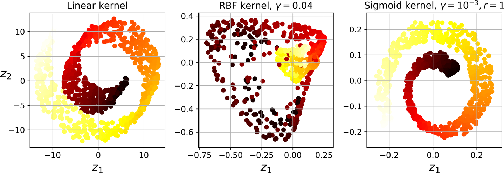
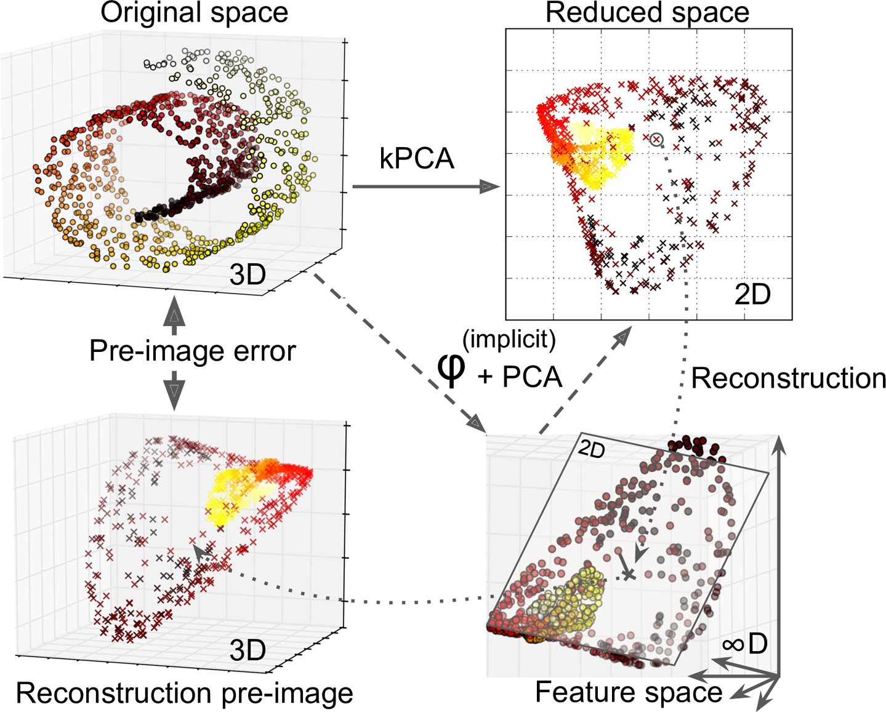

6.2 Kernel PCA
PCA in a kernel-induced feature space.
These notes walk through the lecture slides. The original deck is unchanged; use (slides) on the course hub if you want that PDF.
Figures and notes follow Deisenroth, Faisal, and Ong, Mathematics for Machine Learning; Theodoridis; and Géron.
1. Kernel PCA
The kernel trick applies to PCA. You get nonlinear projections for dimensionality reduction. That method is kernel PCA (kPCA).
kPCA computes eigenvectors of the Gram matrix built from the kernel on all pairs of points. Those eigenvectors are the principal components in the feature space the kernel induces. They are the kernel principal components.

2. Kernel and hyperparameters via a supervised task
kPCA is unsupervised. There is no obvious score that says which kernel or which hyperparameters are best.
Dimensionality reduction is often a step before a supervised task (classification, say). Then you can grid-search the kernel and hyperparameters for the best performance on that task.
3. Kernel and hyperparameters via reconstruction error
A fully unsupervised alternative: pick the kernel and hyperparameters with the lowest reconstruction error.
Reconstruction error in kPCA is not as simple as in linear PCA, because of the kernel trick.
kPCA with a kernel is mathematically the same as mapping the training set to an (often infinite-dimensional) feature space, then running linear PCA there.
You measure error with a reconstruction pre-image: a point in the original space that maps close to the reconstructed point. Minimize that pre-image error to choose the kernel and hyperparameters.

The figure shows the original Swiss-roll 3D set (top left) and the 2D set after kPCA with an RBF kernel (top right). By the kernel trick, that is the same as mapping with into an infinite-dimensional feature space (bottom right), then projecting down to 2D with linear PCA.
Practice
-
When would you prefer kernel PCA to ordinary PCA?
-
kPCA has no labels. Name two ways to choose a kernel and its hyperparameters.
-
What is a reconstruction pre-image, and why does kPCA need one?